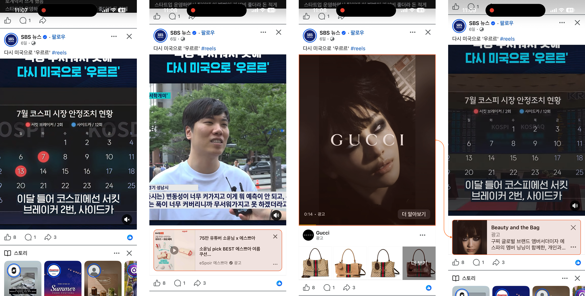
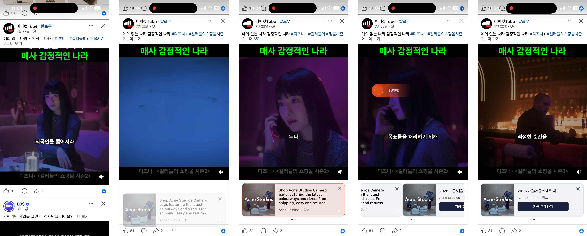

콘텐츠 연계형 수익화 광고
크리에이터 콘텐츠를 일정 시간 이상 시청한 사용자에게 하단 배너를 자동 노출. 콘텐츠 종료 후 After Video 광고 재생 → 원 콘텐츠 Replay + 배너 유지.
Case A. 단일 배너형
사용자 플로우

이미지를 클릭하면 확대해서 볼 수 있습니다.
플로우 디스크립션
샘플 영상
영상을 클릭하면 확대해서 볼 수 있습니다 (좌하단 버튼으로 일시정지·재생 가능)
영상을 클릭하면 확대해서 볼 수 있습니다 (좌하단 버튼으로 일시정지·재생 가능)
포스트롤 부가 광고: 1:1 동영상 + 슬라이드형
위 플로우의 "콘텐츠 종료 시 포스트롤 광고 노출" 구간에서 실제로 재생되는 광고 상품입니다. 메인 상품인 하단 배너(수익 쉐어)와는 별개로, 정방형(1:1) 동영상 광고가 먼저 재생된 뒤 슬라이드형 카드로 전환되어 타이틀·설명·CTA를 순차적으로 노출하는 방식입니다.
광고가 끝나면 원 콘텐츠가 Replay되며 하단 배너도 함께 유지되어, 하나의 시청 세션 안에서 배너 + 포스트롤 두 번의 광고 노출 기회를 확보하는 구조입니다. 수익 쉐어형 배너가 이 사례의 주력 상품이지만, 콘텐츠 종료 시점에 자연스럽게 삽입되는 이 포스트롤 광고 역시 별도 지면 상품으로 벤치마킹할 가치가 있습니다.
※ 해당 포스트롤 광고의 실제 화면 캡처는 아직 없어 별도 이미지 없이 텍스트로만 정리합니다.
Case B. 스와이프 카드형
사용자 플로우

이미지를 클릭하면 확대해서 볼 수 있습니다.
플로우 디스크립션
샘플 영상
영상을 클릭하면 확대해서 볼 수 있습니다 (좌하단 버튼으로 일시정지·재생 가능)
카카오 지면 적용 포인트
적용 가능 지면
친구탭 소식칩 / 지금탭 오픈채팅칩 등 유사한 소비 패턴을 가진 카카오 지면에 적용을 검토할 수 있습니다.
고려 사항
지속 시청 시간 임계값 및 노출 빈도에 따른 사용자 피로도 확인 필요.
벤치마킹 포인트
이 사례의 핵심은 광고 노출 횟수를 늘리는 것이 아니라, 콘텐츠 소비 흐름 안에 광고를 자연스럽게 단계적으로 삽입하는 것입니다. Engagement Trigger — 일정 시간 이상 시청한 사용자에게만 배너를 노출해 광고 피로도를 낮추고, After Video Monetization — 콘텐츠 종료 시점을 활용해 1:1 동영상+슬라이드형 포스트롤 광고를 추가 노출함으로써 콘텐츠 흐름을 방해하지 않으면서 광고 수익 기회를 확보하며, Replay + Banner Persistence — 광고 종료 후 원 콘텐츠를 다시 재생하면서 직전 배너를 유지해 브랜드 인지와 전환 가능성을 한 번 더 높입니다.